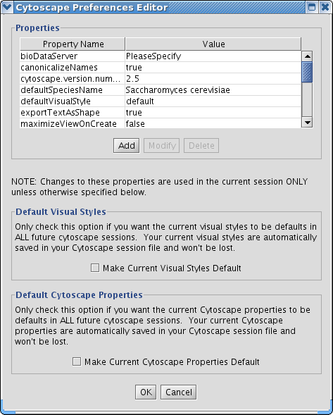
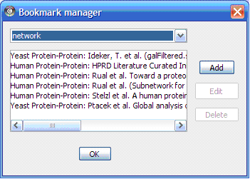

Table 8.
Important! If you have used previous versions of Cytoscape, you will notice that handling of properties has changed. The most important change is that properties are no longer saved by default to the current directory or to your home |
The Cytoscape Properties editor, accessed via Edit → Preferences → Properties…, is used to specify general and default properties. Properties are now stored in Cytoscape session files, so changes to general properties will be saved as part of the current session, but will only carry over to subsequent sessions if they are set as defaults or exported using the File → Export function.
Cytoscape properties are configurable via Add, Modify and Delete operations.

Some common properties are described below.
Table 9.
Property name | Default value | Valid values |
viewThreshold | 10000 | integer > 0 |
secondaryViewThreshold | 30000 | integer > 0 |
viewType | tabbed | tabbed |
defaultWebBrowser |
| A path to the web browser on your system. This only needs to be specified if Cytoscape can’t find the web browser on your system. |
It is possible to alter the default properties for Cytoscape.
Edit the properties via Edit → Preferences → Properties... and check the Make Current Cytoscape Properties Default checkbox. This will save the current properties to the .cytoscape directory, where they will then be applied to all of your Cytoscape sessions from that point on. Otherwise, Cytoscape will automatically save the properties used in a particular session inside its .cys session file, while the default properties will be applied at the beginning of subsequent sessions.
Cytoscape contains a pre-defined list of bookmarks, which point to sample network files located on the Cytoscape web server. Users may add, modify, and delete bookmarks through the Bookmark manager, accessed by going to Edit → Preferences → Bookmarks… .

There are currently two types of bookmarks: network and annotation. Network bookmarks are URLs pointing to network files available on the Internet. These are nomal networks that can be loaded into Cytoscape. The annotation bookmarks are URLs pointing to ontology annotation files. The annotation bookmarks are only used when importing an ontology.